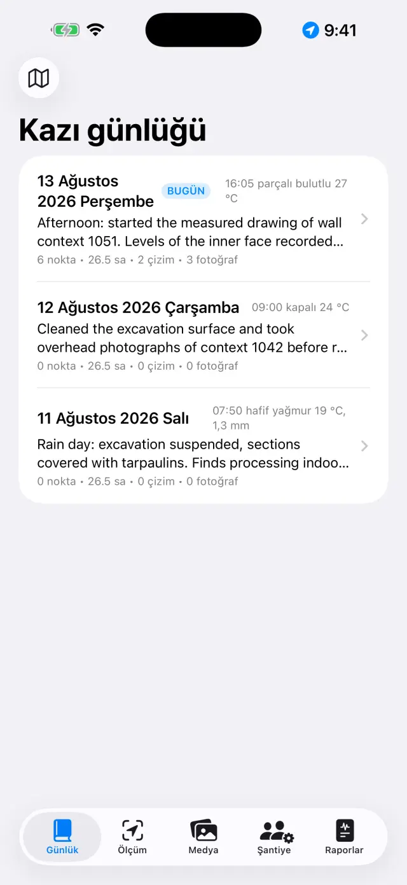
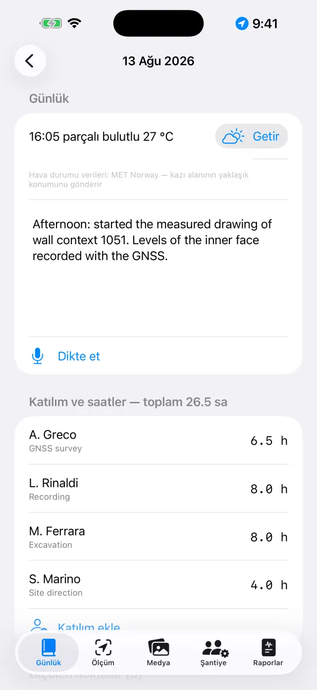
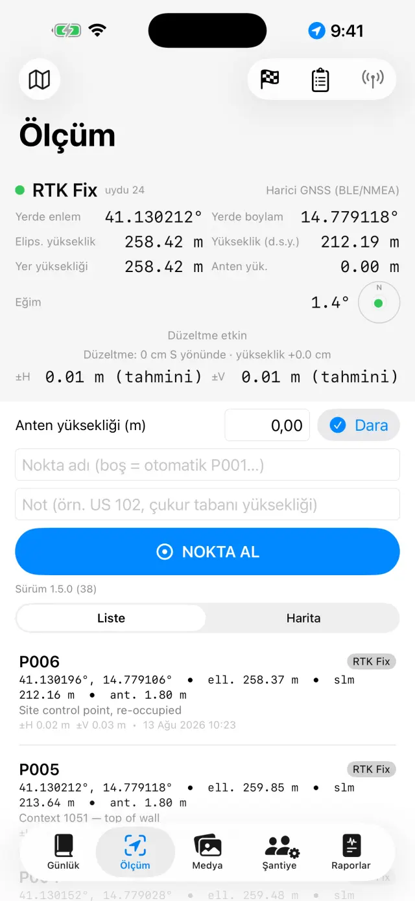
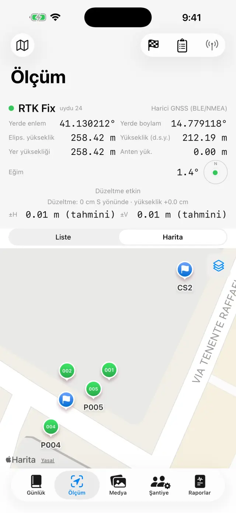
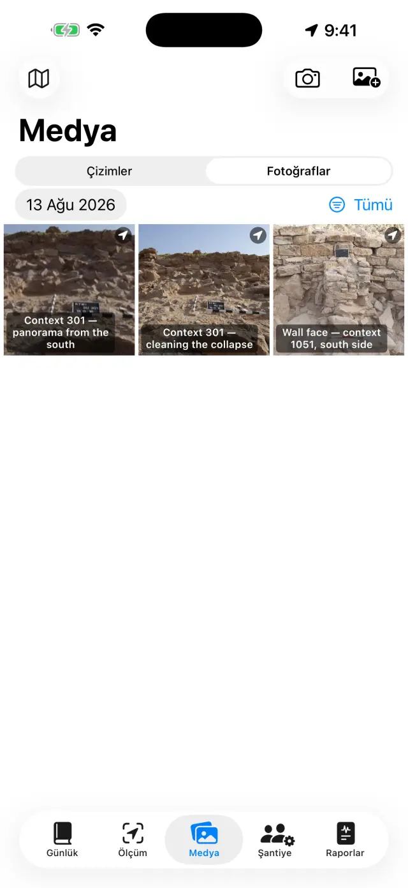
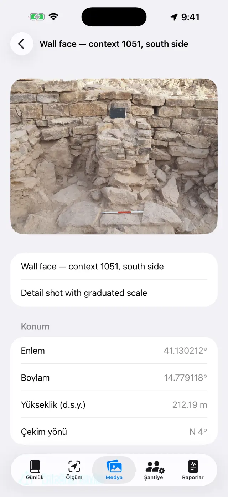
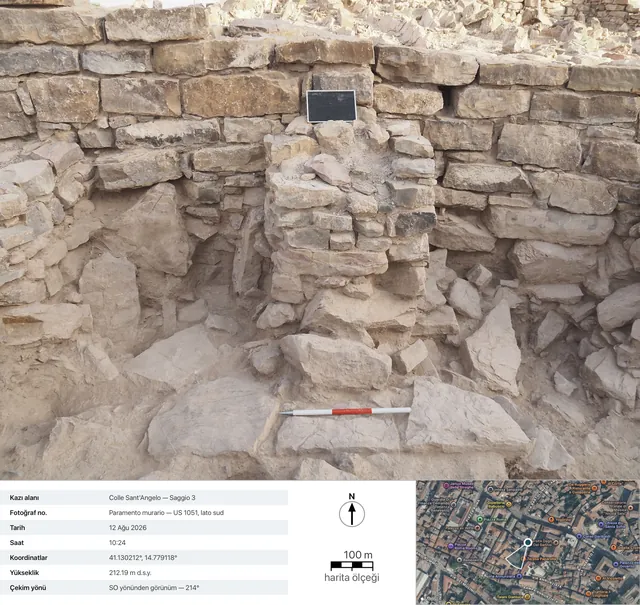
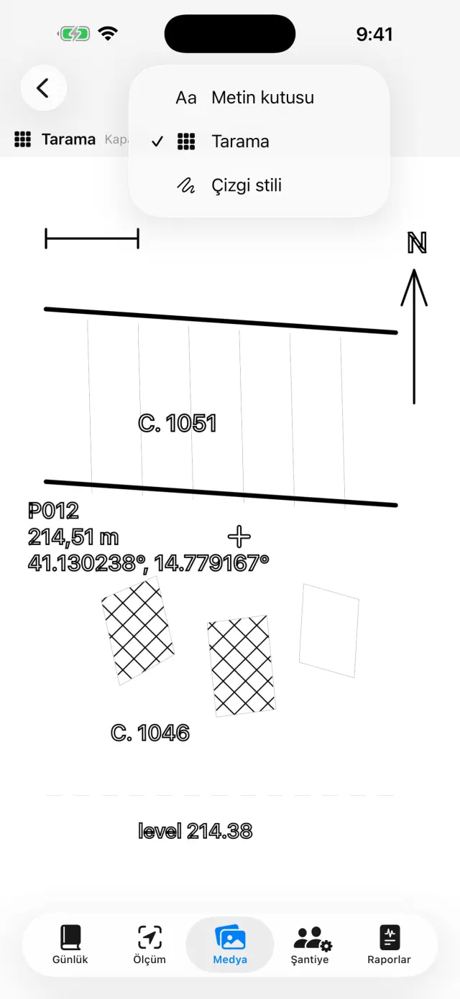
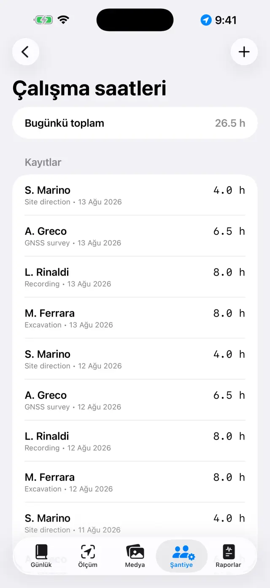
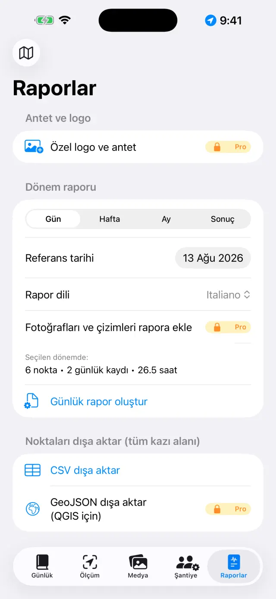

iPhone ve iPad için dijital kazı günlüğü. %100 çevrimdışı: verileriniz cihazınızda kalır.
İki kelimeyle
Tek bir fikir var: her kazı günü bir sayfadır ve kendi
kendini doldurur. Sen her şeyi olduğu yerde kaydedersin — Ölçüm'de bir GNSS
noktası, Medya'da bir fotoğraf, Şantiye'de saatler — ve Günlük'teki
o günün sayfası hepsini kendiliğinden toplar. Hafta sonunda ya da kazının
sonunda raporlar bu sayfalardan kendi kendine oluşur.
Tipik bir gün
SabahGünün sayfasını aç, havayı ve günlüğü yaz (Dikte et ile sesli de olur)
KatılımŞantiye'de kimin geldiğini ve saatlerini kaydet
ÖlçümGNSS noktalarını al; RTK kullanıyorsan önce bir röperi kontrol et
ÇizimKesiti ya da planı bir fotoğraf üzerine çiz (dijital “aydınger”)
AkşamRaporlar sekmesinden günlük raporu oluştur: gönderilmeye hazır PDF
İlk adımlar
İlk açılışta hazır bir örnek kazı alanı bulursun. Kendi alanını oluşturmak
için yukarıdaki kazı alanı adına dokun (🗺 simgesi) →
Yeni kazı alanı… ve bir ad ver (örn. “Colle Sant'Angelo —
Sondaj 3”).
Etkin kazı alanının adı her zaman yukarıda görünür: bütün sekmeler o alanın
verilerini gösterir. Alan değiştirmek için ada yeniden dokun: liste
“Kazı alanlarınız” başlığının altındadır ve Kazı alanını yeniden
adlandır… ile bir adı hiçbir şey kaybetmeden düzeltirsin.
Sayfasını açmak için bir güne dokun: o günün günlüğü, havası, katılımları,
noktaları, fotoğrafları ve çizimleri zaten oradadır.
Günlüğü yaz ya da Dikte et'e dokunup konuş: yazıya dökme cihazda
olur, ağ olmadan da çalışır.
Hava elle yazılabilir (örn. “Açık, 28 °C, hafif rüzgâr”) ya da
Getir ile alınır: bu düğme o anki koşulları Norveç meteoroloji
servisine sorar. Ağ gerekir ve yalnızca bugünün sayfasında çalışır: dünün
havası artık geri getirilemez. Öğleden sonra ikinci bir dokunuş bir ölçüm daha
ekler. Elle yazdığın her zaman üstün gelir.
Getirirken cihazdan yalnızca yaklaşık 11 metreye yuvarlanmış bölge konumu
çıkar; raporlarda satır raporun dilinde görünür.

Günlerin listesi

Bir günün sayfası
📍 Ölçüm
Yukarıdaki pano canlı konumu gösterir: koordinatlar, yükseklikler, duyarlık
ve çözüm türü (GPS / RTK Float / RTK Fix).
Çubuk kullanıyorsan Anten yüksekliği (m) değerini gir: noktanın
yüksekliği kendiliğinden yere indirilir.
NOKTA AL'a dokun. Ad otomatik ilerler (P001, P002…) ama kendi
adını da yazabilirsin (örn. “US 102 — çukur tabanı”) ve bir not
ekleyebilirsin.
Noktaları yerinde görmek için Liste ile Harita
arasında geçiş yap; haritadan kadastroyu ya da başka bir WMS servisini
açabilirsin.
Röperlerin (🏁) kendi bölümü vardır: CSV'den içe aktar ya da oluştur, sonra
ölçüme başlamadan önce Anlık kontrol ile
ΔKuzey/ΔDoğu/ΔYükseklik farklarını canlı izle.
Nivelman defterleri optik nivo için saha defteridir: istasyonlar,
geri ve ileri okumalar, bir başlangıç röperinden hesaplanan yükseklikler ve
kapanma kontrolü. Nivelmanla bulunan noktalar, GNSS noktaları gibi kendi
yükseklikleriyle kazı alanına girer.

Ölçüm sekmesinin GNSS panosu

Haritada noktalar ve röperler
Her nokta iki yüksekliği birden saklar:
elipsoidal ve ortometrik (d.s.y.). Telefonun dahili GPS'iyle d.s.y. yüksekliği
bulunmayabilir: harici bir alıcı gerekir (aşağıya bak).
📷 Medya
Kamera düğmesiyle çek ya da fotoğraf kitaplığından içe aktar.
Fotoğraflar sırayla adlandırılır (F001, F002…) ve son GNSS konumuyla
coğrafi olarak etiketlenir.
Çekimde uygulama pusuladan çekim yönünü de kaydeder:
fotoğrafın ayrıntısında ve raporlarda “SO yönünden görünüm — 214°” yazar; tam
tepeden çekilen kareler için (plan, bir US'nin tabanı) üst kenarın yönüyle
birlikte düşey çekim ibaresi çıkar. Pusula etkileniyorsa uygulama bunu
söyler.
Başlık ve notlar için bir fotoğrafa dokun (örn. “US 102 kuzeyden”).
Fotoğraf fişini paylaşPROfotoğraf belgeleme fişini üretir: fotoğrafın altında çekim
verileri (kazı alanı, numara, tarih ve saat, koordinatlar, yükseklik, yön),
iğnesi ve çekim konisiyle bir uydu görüntüsü, haritanın ölçek çubuğu ve kuzey
oku. Harita ağ ister: ağ yoksa fiş yine çıkar, veri paneli genişletilmiş
olarak.

Fotoğraf galerisi

Bir fotoğrafın ayrıntısı: koordinatlar, yükseklik ve çekim yönü

Dışa aktarılan fiş: çekim verileri, çekim konisiyle uydu görüntüsü, haritanın ölçek çubuğu ve kuzey oku
✏️ Çizimler (Medya içinde)
Yeni bir tabaka oluştur ve arka plan olarak kazı alanının bir fotoğrafını
seç: dijital “aydıngerin” budur. Bir çizim birden çok güne yayılabilir.
Tabakaları, kesikleri ve taşları parmakla ya da Apple Pencil ile çiz;
çizgini daha iyi görmek için fotoğrafın saydamlığını ayarla.
Yakınlaştırmak için parmaklarını aç (6× kadar; 1×'e dönmek
için iki parmakla çift dokunuş).
Çizgi çıkarmaPRO dokunduğun nesnenin
(bir taş, bir tabakanın sınırı) konturunu otomatik tanır ve çizgiye
dönüştürür: renk ve
kalınlık, kipten çıkmadan değiştirilir. Her şey cihazda olur, ağ
gerekmez.
Etiketler için metin kutuları ekle (örn. “US 1002”): taşınır, parmakla
boyutlandırılır ve dört yazı tipi arasından seçilir.
Fotoğraf ölçeği aracıyla (cetvel) bilinen bir ölçünün iki ucuna
dokunursun — jalonun bir bölümüne — ve gerçek uzaklığı yazarsın: fotoğraf
ölçeğini kazanır, o andan sonra dışa aktarmalar metre konuşur.
Yükseklikli nokta ile kazı alanındaki bir GNSS noktasının (ya da
elle yazılmış bir noktanın) artı işaretini fotoğrafa koyarsın: ad, yükseklik ve
koordinatlar, kılavuz çizgili ve sürüklenebilir bir etikette görünür.
Lejantla dışa aktarPRO: görüntü altında
beyaz bir şeritle çıkar — metrik ölçek çubuğu (ölçek varsa), tam tepeden
çekilmiş fotoğraflar için kuzey oku, cepheden çekilenler için “… yönünden
görünüm”.
Vektörel dışa aktarPRO: çizim için SVG
ya da CBS için DXF. Tam tepeden çekilmiş bir fotoğrafta
koordinatlı en az iki yükseklikli nokta varsa DXF UTM'de coğrafi
referanslı çıkar ve QGIS'te kendiliğinden dünya üzerine oturur;
yalnızca ölçek varsa yerel metre biriminde çıkar; ikisi de yoksa uygulama bunu
söyler ve birimsiz bir dosya üretmez.
Bitirdiğinde fotoğrafı gizle: geriye rapora hazır, temiz çizim kalır.

Dijital aydınger
👷 Şantiye
Günün katılımlarını kaydet: her kişinin adı, görevi ve saatleri.
Ekipman envanterini ve kime atandıklarını tut.

Katılım ve saatler
📄 Raporlar
Türü seç: günlük (ücretsiz, filigranlı),
haftalık, aylık ya da eksiksiz ekleriyle
sonuç raporu PRO.
Rapor dilini on yedi dil arasından seç; uygulamanın
dilinden bağımsızdır: uygulamayı Türkçe kullanırken rapor Almanca
çıkabilir.
PDF oluştur ya da logo ve fotoğraflarla DOCX PRO,
noktaların CSV'sini, QGIS için GeoJSON PRO dışa
aktar.
Raporlarda fotoğraflar açıkken Fotoğrafların yerine fotoğraf
fişleriPRO seçeneğini kullanabilirsin: her
fotoğraf, verileri ve haritasıyla eksiksiz bir belgeleme fişi olarak, raporun
dilinde PDF'e ve DOCX'e girer.

Rapor oluşturma
Harici GNSS alıcısı ve NTRIP
Harici bir alıcıyla (santimetre duyarlıklı anten) uygulama RTK duyarlığına
ulaşır. Dahili GPS her zaman yedek olarak kalır.
Alıcıyı aç ve telefonun Bluetooth'unu etkinleştir.
Ölçüm'de konum kaynağını seç: Harici GNSS (BLE/NMEA)PRO ve alıcını listeden seç. MFi alıcılar (ücretsiz)
ve NMEA'yı ağ üzerinden yayınlayanlar da desteklenir.
RTK düzeltmeleri için NTRIP'i ayarla: caster adresi, port,
mountpoint, kullanıcı ve parola (cihazın anahtar zincirinde kalır). Uygulama
konumu caster'a gönderir ve düzeltmeleri alır.
RTK Fix'e geçmesini bekle: santimetre duyarlığı.
Başlamadan önce bir röper üzerinde kontrol et.
Yedekleme ve veri alışverişi
Kazı alanı menüsünden Kazı alanını dışa aktar (.zip)'a dokun:
içinde her şey var — günlük, noktalar, fotoğraflar, çizimler, saatler,
röperler.
+ Otomatik çizgi çıkarma, lejantla dışa aktarma, SVG/DXF
Nivelman defteri
✓
✓
Fotoğraf fişi
—
Paylaşım ve raporlarda fişler
Sesli dikte
✓
✓
Rapor dilleri
17
17
Pro, kendiliğinden yenilenen aylık ya da yıllık bir aboneliktir; ya da tek
seferlik, ömür boyu bir satın alım. Apple Kimliği ayarlarından yönetilir ve
iptal edilir.
Sorun giderme
Bluetooth alıcı görünmüyor ya da bağlanmıyor
Sırayla denetle:
alıcı açık ve başka bir uygulamaya ya da telefona bağlı değil;
sistemin Bluetooth'u açık ve uygulamanın Bluetooth izni var
(Ayarlar → Giornale di Scavo);
Ölçüm'de seçilen kaynak Harici GNSS (BLE/NMEA);
alıcıyı kapatıp yeniden aç, sonra aramayı yinele.
Bir türlü RTK Fix'e ulaşamıyorum
Etkin bir NTRIP bağlantısı gerekir: caster'ı, mountpoint'i ve kimlik
bilgilerini denetle.
Telefonun veri kapsamasını denetle: düzeltmeler internet üzerinden gelir.
Açık gökyüzü: sık ağaçlar ve yakın duvarlar sinyali bozar. Kapsama kötüyse
RTK Float'ta (desimetre) kalabilirsin.
Yakın bir mountpoint (< 30–40 km) ya da bir VRS ağı seç.
NTRIP bağlanmıyor
Adresi ve portu (çoğu kez 2101), bir de mountpoint'in var olduğunu denetle:
çoğu caster listeyi yayımlar (sourcetable).
Yanlış kullanıcı ya da parola 401/403 hatası verir: kimlik bilgilerini
yeniden gözden geçir.
Bazı ağlar konumun gönderilmesini ister (GGA): uygulama bunu kendiliğinden
yapar, ama alıcının önce bir fix'i olmalı.
d.s.y. yüksekliği boş ya da sıfır
Telefonların dahili GPS'i yalnızca elipsoidal yükseklik verir. Ortometrik
yükseklik (d.s.y.) harici bir alıcının GGA cümlesinden gelir. Alıcı yoksa
noktalar yine de elipsoidal yüksekliği saklar.
Dikte çalışmıyor
Ayarlar'da mikrofon ve konuşma tanıma iznini denetle.
Yazıya dökme cihazda olur: ilk seferinde sistem dil modelini indirmek
zorunda kalabilir (bir kereliğine ağ gerekir, sonra çevrimdışı çalışır).
Kısa cümlelerle konuş; metin günlüğün sonuna eklenir.
Kadastro haritası (WMS) görünmüyor
Uygulama çevrimdışıdır, ama WMS katmanları web servisleridir: bir bağlantı ve
çalışan bir servis gerekir. İtalyan kadastrosu hazır gelir; başka ülkeler için
ulusal servisin WMS uç noktasını gir (EPSG:3857 desteklemelidir). Veri
kapsamasının dışında temel harita ve noktalar görünür kalır.
Fotoğrafların koordinatı yok
Fotoğraf konumunu son GNSS fix'inden alır: önce Ölçüm'ü aç ve konumun
oturmasını bekle, sonra çek. Konum izni verilmemişse fotoğraflar koordinatsız
kaydedilir.
Raporda fotoğraflar ya da logo eksik
Raporlardaki fotoğraflar, logo ve özel antet Pro'nun parçasıdır ve DOCX ile
PDF için geçerlidir. Ücretsiz günlük raporda filigran vardır ve fotoğraflar yer
almaz.
Yanlışlıkla bir kazı alanı sildim
Silme kesindir: veriler geri getirilemez (bulut yoktur). Daha önce dışa
aktardığın bir ZIP varsa onu içe aktararak alanı o günkü haline döndürürsün.
Öneri: gün sonunda bir ZIP dışa aktar.
Pro'yu satın aldım ama hâlâ kilitli görünüyor
Pro ekranında Satın alımları geri yükle'ye, satın alımı yaptığın
Apple Kimliğiyle dokun. Cihaz değiştirdiysen geri yükleme aboneliği ya da ömür
boyu lisansı geri getirir.
“Getir” sönük, ya da “Hava durumu kullanılamıyor” diyor
düğme sönükse geçmiş bir günün sayfasındasın: hava durumu yalnızca bugünün
sayfasında getirilir;
“Hava durumu kullanılamıyor” çıkıyorsa ağ yok, ya da kazı alanında konumu
alacak bir GNSS noktası henüz yok — bir nokta al ve yeniden dene.
Fotoğraf fişi haritasız çıkıyor
Uydu görüntüsü Apple'dan gelir ve ağ ister: uygulama 15 saniyeye kadar
bekler, sonra fişi haritasız üretir (veriler ağı beklemez). Yavaş şantiye
ağlarında beklemenin tamamı gerekebilir: Wi-Fi altında yeniden dene. Fotoğrafta
coğrafi etiket yoksa harita tanımı gereği olamaz.
DXF reddediliyor, ya da CBS'de “başlangıç noktasının yanında” açılıyor
coğrafi referanslı DXF için uygulamanın kamerasıyla tam
tepeden çekilmiş bir fotoğraf ve fotoğraf üzerinde iyi aralıklı,
koordinatlı en az iki yükseklikli nokta gerekir;
yalnızca jalonun ölçeğiyle DXF yerel metre biriminde
çıkar: bu doğrudur, ama CBS onu başlangıç noktasının yanında gösterir —
uygulama bunu önceden söyler;
ne ölçek ne nokta varsa dışa aktarma reddedilir: birimsiz bir DXF hiçbir
CBS'de anlamlı biçimde okunamazdı.
Lejantlı dışa aktarmada kuzey oku çıkmıyor
Ok yalnızca uygulamanın kamerasıyla tam tepeden çekilmiş
fotoğraflarda görünür; o kamera çekim anında azimutu kaydeder. Cepheden
çekilenlerde “… yönünden görünüm” yazısı çıkar (dikey bir cephe düzlemine kuzey
oku koymak geometrik bir yalan olurdu); kitaplıktan içe aktarılan fotoğraflarda
ise ikisi de yoktur, çünkü çekim verileri eksiktir.